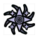

Psi Operative (LWOTC)
Class Overview
The Psi Operative in Long War of the Chosen is slightly different from the one in vanilla XCOM 2. Like in Long War 2, some abilities require other abilities to be learned as a prerequisite, but Psi Operatives now also need to gain experience to level up as other soldiers do, limiting the amount of perks that can be trained.
Psi Operatives focus entirely on psionic abilities in their perk tree, leaving little in the matter of using regular guns. However, Psi Operatives get Quick Study, letting them train up Officer abilities faster than other soldiers. The Psi Amp lets the Psi Operative use psionic abilities, improving them and their Psi Offense stat (which is used for Insanity and Domination) as it's upgraded.
Psi Operatives are automatically granted all abilities in the first two ranks when first trained.
Weapons
Primary : Rifles , SMGs , Shotguns .
Secondary : Psi Amp
Abilities
Mouse-over
 for more information.
for more information.
| Ability | Rank | Ability |
|
Does guaranteed Psionic damage to an organic enemy. Ignores cover, armor and shield HP.
|
Initiate |
Learn officer abilities in half the time.
|
| Telepath | Resonate | |
|---|---|---|
|
Debilitating telepathic attack that can inflict different negative conditions, including mental control of the target.
|
Acolyte |
Grants bonus will, critical chance and ablative hit points to an ally until the beginning of the player's next turn.
|
|
Soulfire transfers the damage done back to the Psi Operative as health and grants an ablative HP for 3 turns.
|
Adept |
The Psi Operative may immediately extinguish mental impairments for a squadmate.
|
|
Temporarily phase out of existence to teleport to a nearby location.
|
Disciple |
If an enemy is carrying explosives, they can be remotely detonated by the Psi Operative.
|
|
Completely stuns the target for 1 turn, but renders them immune to any damage or attack.
|
Mystic |
The soldier is immune to fire, poison, acid, and explosive damage.
|
|
Fortress now provides immunity to nearby teammates.
|
Warlock |
project psionic shields around the soldier and nearby allies. The shields will collapse if this soldier is killed.
|
|
Project a beam of terrible power that damages every target it passes through. This attack can penetrate multiple enemies and obstacles.
|

Magus |
Summon meteors of psionic energy to deal damage to enemies inside a target area, and destroy their cover.
|
|
Generate an explosive field of Psionic energy that immediately damages everything within. Organic enemies have a chance to suffer Insanity.
|
Master |
Permanently mind control an enemy. Only one successful Domination can be performed per mission.
|
Ability Prerequisites
In order to obtain certain psi abilities, the Psi Operative first needs to acquire a prerequisite perk (shown with colored arrows on the diagram below):
It's worth noting that abilities which are connected to multiple other abilities unlock all of them at once - for example, picking Fortress adds both Bastion and Null Ward to the pool of available perks for a given Psi Operative.
XCOM Abilities
XCOM row abilities are able to be purchased when the Training Center is built. The cost is 10/20/30 AP per tier for offensive perks, 10/15/25 AP per tier for defensive perks and 35 AP for Tier 4 perks.
| Tier 1 Defensive | Tier 1 Offensive | Tier 2 Defensive | Tier 2 Offensive | Tier 3 Defensive | Tier 3 Offensive | Tier 4 |
|
Gain 5 dodge per enemy you can see, up to a maximum of +30.
|
Special shot with a bonus to hit that does half damage but confers defense and dodge penalties and forces target to change position if it hits.
|
Gain bonus Aim and Defense when at least 4 tiles distant from any ally, with a maximum of +12/+12 at 7+ tiles.
|
Any directed primary weapon shot, hit or miss, will mark the target, increasing your squad's aim by +15 against this target.
|
This soldier has significantly reduced infiltration times while on missions.
|
Special shot that does 50% of normal damage but reduces target mobility for the following 2 turn(s). Cone-based attack with primary weapon.
|
Take a shot with an aim penalty of 10. If you hit the target, you take another shot on the target automatically.
|
|
Grants one free smoke grenade item to your inventory.
|
Confers +10 aim and +10 defense against targets at a lower elevation.
|
If you spend all of your actions on moves, you are granted an automatic overwatch shot at the end of the turn.
|
Your primary weapon attacks shred armor.
|
Gain 4 aim, 1 mobility, 2 HP, 4 will, and 4 dodge.
|
A Rupture shot grants a +50 bonus to critical hit chances and ensures that the target takes an additional +3 damage from all attacks in the future.
|
When in overwatch, you may take two reaction shots.
|
|
Enemy damage is reduced by 1 when in cover and attacked through that cover. Also grants 5 will.
|
Hunker Down now confers +20 Aim and +20 Crit to the first shot on the following turn.
|
Gain 40 dodge against attacks within four tiles.
|
You gain +10 Aim on Overwatch and other reaction shots, and they can critically hit.
|
Enemy attacks against you suffer a -30 penalty to critical hit chances.
|
Take a special shot with +30 bonus to critical chance and 34% bonus critical damage. Has a 4 turn cooldown.
|
You do 2 additional points of base damage and 1 additional point(s) of bonus critical damage with your primary weapon.
|
|
All enemies within the soldier's 5 tile radius suffer penalties of -15 Aim and -4 Mobility.
|
Gain +1 damage on critical hits for every two enemies you can see, up to a maximum of +8. Works for the soldier's primary weapon and explosives.
|
Give a friendly unit 30 Dodge until the start of your next turn. Whenever you kill an enemy, you gain an extra charge. Usable once per turn. Starts with one charge, and is a free action.
|
Grants +1 charge per grenade item in a utility slot.
|
Take 35% less damage against attacks within four tiles.
|
Ranged attacks against flanked enemies deal +2 damage.
|
Special shot for primary-weapon shotguns only: Fire a short-range cone-based attack at nearby targets. Has a 4 turn cooldown.
|
|
Activate to grant +20 defense until the beginning of the next turn. Does not cost an action. Has a 4 turn cooldown.
|
Your ranged attacks gain +10 aim and pierce 1 armor against unflankable enemies.
|
Your smoke grenades confer an additional 10 defense.
|
Confers +30 critical chance against adjacent targets. The bonus declines with distance from the target.
|
Once per turn, gain an additional move action after taking a standard shot at a flanked or exposed target with your primary weapon.
|
Standard shots are not turn-ending, allowing for shooting then moving or shooting twice on a turn.
|
After taking damage, gain a stacking 25% Damage reduction until the end of your turn up to a maximum of 4 stacks.
|
|
When targeted by enemy fire, automatically fire back with your primary weapon once per turn.
|
When in overwatch, each shot you hit with grants another reaction fire shot, up to a maximum of three shots.
|
|||||
|
Once per turn, take a reaction shot with your primary weapon at a visible enemy that has fired upon a visible ally.
|
Training Time
Training a rookie into a Psi Operative takes 2 days in Rookie difficulty and 4 days in all others. Training a new ability takes a base number of days plus additional days based on the difference between the Psi Operative's rank and the ability's rank:
- Base time = 2/4/4/4 days
- Rank time = 5/6/7/7 days per rank difference
- Times are based on difficulty: Rookie/Veteran/Commander/Legend
Each scientist staffing the Psi Lab will increase training speed by 100%, meaning the training time will be reduced by 50% with one scientist and by 66% with two.
If a Psi Operative is training in the tube and you send them to infiltrate a mission, another soldier can train in that psi tube; the soldier that was in the tube will be on hold upon return from their mission.
Stat Progression
| Rank |
|
|
|
|
|
|
|||
| Per Level |
Health |
1 | 0 | 0 | 0 | 1 | 0 | 0 | 1 |
|
Aim |
2 | 2 | 2 | 2 | 2 | 2 | 2 | 2 | |
|
Will |
5 | 5 | 0 | 0 | 0 | 0 | 0 | 0 | |
|
Psi Offense |
45 | 4 | 4 | 4 | 4 | 4 | 4 | 4 | |
| Total |
Health |
1 | 1 | 1 | 1 | 2 | 2 | 2 | 3 |
|
Aim |
2 | 4 | 6 | 8 | 10 | 12 | 14 | 16 | |
|
Will |
5 | 10 | 10 | 10 | 10 | 10 | 10 | 10 | |
|
Psi Offense |
45 | 49 | 53 | 57 | 61 | 65 | 69 | 73 | |
Sample Builds
See Also
| XCOM Units in Long War of the Chosen | ||||||||||||||||||||||||||
| Starting |
|
|||||||||||||||||||||||||
| Unlockable |
|
|||||||||||||||||||||||||
| Faction |
|
|||||||||||||||||||||||||